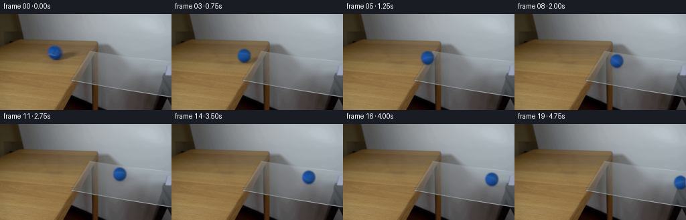
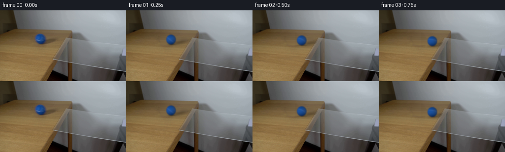
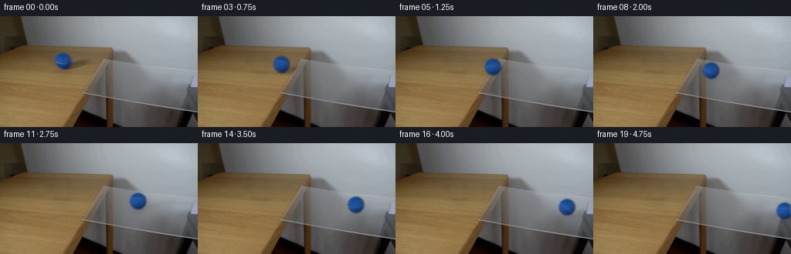
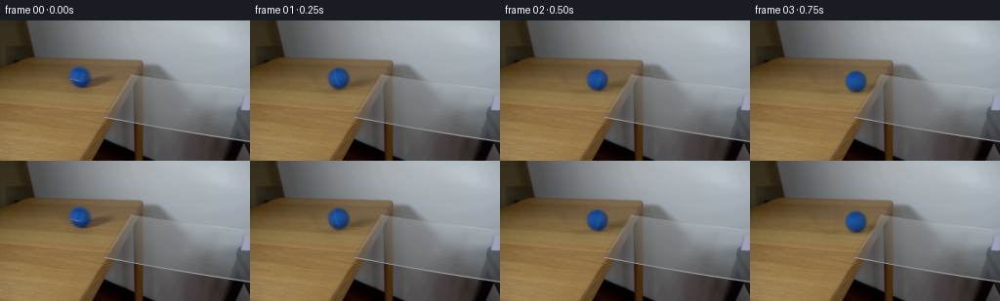

CODING AGENTS AS PIXEL WORLD MODELS
traex/GPT-6.1-Sol · 0027
点击播放 · 原生 RGB 像素
逐轮保存的候选
回放视频、检查图与代码变化。
每份候选均可单独播放。实际图片检查记录在下方工具轨迹中。
候选 01播放与检查图
点击播放 · 原生 RGB 像素


展开代码变化
--- 上一保存版本
+++ 本次保存版本
@@ -0,0 +1,171 @@
+from pathlib import Path
+import numpy as np
+from PIL import Image
+from scipy.ndimage import gaussian_filter, map_coordinates
+import artifact_io
+
+ROOT = Path(__file__).resolve().parent
+W, H, SS = 256, 144, 4
+CY, CX = 57.4, 81.49
+RX, RY = 9.70, 10.00
+Y, X = np.mgrid[:H, :W]
+
+
+def smoothstep(a, b, value):
+ z = np.clip((value-a)/(b-a), 0, 1)
+ return z*z*(3-2*z)
+
+
+def clean_plate(image):
+ """Recover the small occluded wood region from its adjacent grain."""
+ # Both the silhouette and its oblique, soft shadow are removed.
+ ball = np.sqrt(((X-CX)/14.9)**2 + ((Y-CY)/14.7)**2)
+ shadow = np.sqrt(((X-98.5)/27)**2 + ((Y-62.5+.18*(X-98.5))/6.8)**2)
+ weight = 1-smoothstep(.83, 1.08, np.minimum(ball, shadow))
+ weight *= (X < 130)
+ recovered = image.copy().astype(float)
+ for y in range(41, 76):
+ ids = np.flatnonzero(weight[y] > 0)
+ if not len(ids):
+ continue
+ l, r = ids[0], ids[-1]
+ # The pane begins to cover the grain at the sloping table edge.
+ right = min(r+3, int(145-.60*(y-40))-5)
+ left = max(37, l-4)
+ lc = image[y, left-3:left+1].mean(0)
+ rc = image[y, right:right+4].mean(0)
+ for x in ids:
+ f = (x-left)/(right+1.5-left)
+ col = lc*(1-f) + rc*f
+ # Reuse neighboring wood's fine grain without introducing new objects.
+ tx = 36+(x-60)%26
+ sample = image[y, tx-1:tx+2].mean(0)
+ trend = image[y, 35:63].mean(0)
+ fine = np.clip(sample-trend, -3, 3)*.43
+ recovered[y,x] = col+fine
+ return image*(1-weight[...,None])+recovered*weight[...,None]
+
+
+def fit_light(image):
+ nx=(X-CX)/RX; ny=(Y-CY)/RY
+ nz=np.sqrt(np.maximum(0,1-nx*nx-ny*ny))
+ basis=np.stack([np.ones_like(nx),nx,ny,nz,nx*ny,nx*nx,ny*ny],-1)
+ valid=(nx*nx+ny*ny < .78)
+ valid &= ~((Y>=58)&(Y<=62)&(X<85))
+ return np.linalg.lstsq(basis[valid],image[valid],rcond=None)[0]
+
+
+def sphere_layer(cx, cy, travel, coeff, light=1., reflected=False):
+ """Supersampled, rotating felt sphere with a curved inset seam."""
+ x0=max(0,int(np.floor(cx-16))); x1=min(W,int(np.ceil(cx+17)))
+ y0=max(0,int(np.floor(cy-16))); y1=min(H,int(np.ceil(cy+17)))
+ if x1<=x0 or y1<=y0:
+ return None
+ hy,hx=np.mgrid[y0*SS:y1*SS,x0*SS:x1*SS]
+ px=(hx+.5)/SS-.5; py=(hy+.5)/SS-.5
+ nx=(px-cx)/RX; ny=(py-cy)/RY
+ radius=nx*nx+ny*ny
+ nz=np.sqrt(np.maximum(0,1-radius))
+ mask=(radius<=1).astype(float)
+ basis=np.stack([np.ones_like(nx),nx,ny,nz,nx*ny,nx*nx,ny*ny],-1)
+ fit=basis@coeff
+ # At the narrow rim, antialiasing of the source makes an unconstrained
+ # polynomial unreliable. Replace just that rim with diffuse sphere shading.
+ glint=np.exp(-((nx+.50)/.55)**2-((ny+.05)/.44)**2)
+ diffuse=np.stack([7+12*nz+5*glint-4*ny+6*nx*nx,
+ 38+35*nz-7*nx-10*ny-7*ny*ny+10*glint+5*nx*nx,
+ 95+50*nz-24*nx-20*ny-16*ny*ny+8*glint],-1)
+ blend=smoothstep(.67,.96,radius)[...,None]
+ color=fit*(1-blend)+diffuse*blend
+ # Inverse Rodrigues rotation about the horizontal tangent perpendicular
+ # to the projected direction of travel; angle = distance / ball radius.
+ heading=np.arctan(.18)
+ axis=np.array([-np.sin(heading),np.cos(heading),0.])
+ theta=travel/(.5*(RX+RY))
+ points=np.stack([nx,ny,nz],-1)
+ c,s=np.cos(theta),np.sin(theta)
+ body=points*c - np.cross(axis,points)*s + np.sum(points*axis,-1)[...,None]*axis*(1-c)
+ bx,by,bz=np.moveaxis(body,-1,0)
+ groove=by-.27*bx-.43*bz-.09*(bz*bz-bx*bx)
+ seam=np.exp(-.5*(groove/.042)**2)
+ # The photographed pale seam is modest and shaded on the far side.
+ seam*=.78+.22*np.clip(nz,0,1)
+ seam*=1-.35*smoothstep(.0,.65,nx)
+ color+=seam[...,None]*np.array([43.,27.,15.])
+ darkline=np.exp(-.5*((groove+.064)/.020)**2)*.55
+ color-=darkline[...,None]*np.array([3,4,5])
+ # Fine deterministic, object-locked felt fiber irregularity.
+ noise=(np.sin(43*bx+31*by+57*bz)*np.sin(51*by-27*bz+11*bx)
+ +.5*np.sin(17*bx-23*by+37*bz+.9)
+ +.4*np.sin(83*bx+19*by-41*bz))
+ color+=noise[...,None]*np.array([1.8,2.1,2.5])
+ color=np.clip(color*light,0,255)
+ sigma=.92*SS
+ premul=gaussian_filter(color*mask[...,None],(sigma,sigma,0),mode='constant')
+ alpha=gaussian_filter(mask,sigma,mode='constant')
+ hp,wp=y1-y0,x1-x0
+ premul=premul.reshape(hp,SS,wp,SS,3).mean((1,3))
+ alpha=alpha.reshape(hp,SS,wp,SS).mean((1,3))
+ return x0,x1,y0,y1,premul,alpha
+
+
+def render(t, image, plate, coeff):
+ # Gentle forward roll, with a small physically consistent rolling loss.
+ distance=35.65*t-.15*t*t
+ cx=CX+distance
+ cy=CY+.18*distance
+ contact_y=cy+RY
+ base=plate.copy()
+ # The wooden support is bounded by the photographed sloping end edge.
+ on_wood=1-smoothstep(-1.2,1.5,X-(145-.62*(Y-40)))
+ # The long penumbra follows the light source. Over the clear overhang it
+ # becomes faint rather than turning the transparent pane into an opaque slab.
+ q=((X-cx-17.5)/13.4)**2+((Y-cy-5.8+.18*(X-cx-17.5))/3.2)**2
+ penumbra=np.exp(-.5*q)
+ supported=1-smoothstep(115,130,cx)
+ opacity=.285*on_wood+.038*(1-on_wood)
+ base*=1-(opacity*penumbra)[...,None]
+ contact=np.exp(-.5*(((X-cx-1.5)/5.0)**2+((Y-contact_y+.15)/1.05)**2))
+ base*=1-(contact*(.30*supported+.115*(1-supported)))[...,None]
+ # Very low Fresnel reflection on the transparent glass, below the contact.
+ glass=1-smoothstep(0,1,0*X) if False else (1-supported)
+ if glass>0:
+ q=((X-cx)/8.7)**2+((Y-contact_y-3.5)/4.7)**2
+ refl=.045*glass*np.exp(-1.35*q)
+ refl*=smoothstep(contact_y-1,contact_y+2,Y)
+ reflected_rgb=np.stack([np.full_like(X,25),np.full_like(X,66),np.full_like(X,115)],-1)
+ base=base*(1-refl[...,None])+reflected_rgb*refl[...,None]
+ # A short photographic exposure, not a temporal interpolation or camera move.
+ final=np.zeros_like(base)
+ for dt in [-1/150,0,1/150]:
+ tt=max(0,t+dt)
+ d=35.65*tt-.15*tt*tt
+ layer=sphere_layer(CX+d,CY+.18*d,np.hypot(d,.18*d),coeff,1+.045*smoothstep(0,155,d))
+ frame=base.copy()
+ if layer is not None:
+ x0,x1,y0,y1,rgb,alpha=layer
+ frame[y0:y1,x0:x1]=frame[y0:y1,x0:x1]*(1-alpha[...,None])+rgb
+ final+=frame/3
+ return np.clip(np.rint(final),0,255).astype(np.uint8)
+
+
+def main():
+ original=np.asarray(Image.open(ROOT/'first_frame.png').convert('RGB'))
+ assert original.shape==(H,W,3)
+ image=original.astype(float)
+ plate=clean_plate(image)
+ coeff=fit_light(image)
+ frames=np.empty((20,H,W,3),dtype=np.uint8)
+ frames[0]=original
+ for i in range(1,20):
+ frames[i]=render(i/4,image,plate,coeff)
+ artifact_io.save(frames,ROOT)
+ # Numeric inspection assets remain local; there is no visual-tool dependency.
+ tmp=ROOT/'.tmp';tmp.mkdir(exist_ok=True)
+ Image.fromarray(np.uint8(np.clip(np.rint(plate),0,255))).save(tmp/'clean_plate.png')
+ np.save(tmp/'rgb_video.npy',frames)
+ assert np.array_equal(frames[0],original)
+ print(f'Saved {len(frames)} RGB frames at 4 fps, shape {frames.shape}.')
+
+if __name__=='__main__':
+ main()
候选 02播放与检查图
点击播放 · 原生 RGB 像素

展开代码变化
--- 上一保存版本
+++ 本次保存版本
@@ -7,7 +7,7 @@
ROOT = Path(__file__).resolve().parent
W, H, SS = 256, 144, 4
CY, CX = 57.4, 81.49
-RX, RY = 9.70, 10.00
+RX, RY = 10.65, 10.55
Y, X = np.mgrid[:H, :W]
@@ -86,7 +86,7 @@
c,s=np.cos(theta),np.sin(theta)
body=points*c - np.cross(axis,points)*s + np.sum(points*axis,-1)[...,None]*axis*(1-c)
bx,by,bz=np.moveaxis(body,-1,0)
- groove=by-.27*bx-.43*bz-.09*(bz*bz-bx*bx)
+ groove=by-.27*bx-.43*bz-.09*(bz*bz-bx*bx)+.07*np.exp(-(bx/.24)**2)
seam=np.exp(-.5*(groove/.042)**2)
# The photographed pale seam is modest and shaded on the far side.
seam*=.78+.22*np.clip(nz,0,1)
@@ -128,7 +128,7 @@
contact=np.exp(-.5*(((X-cx-1.5)/5.0)**2+((Y-contact_y+.15)/1.05)**2))
base*=1-(contact*(.30*supported+.115*(1-supported)))[...,None]
# Very low Fresnel reflection on the transparent glass, below the contact.
- glass=1-smoothstep(0,1,0*X) if False else (1-supported)
+ glass=1-supported
if glass>0:
q=((X-cx)/8.7)**2+((Y-contact_y-3.5)/4.7)**2
refl=.045*glass*np.exp(-1.35*q)
候选 03播放与检查图
点击播放 · 原生 RGB 像素

展开代码变化
--- 上一保存版本
+++ 本次保存版本
@@ -1,7 +1,7 @@
from pathlib import Path
import numpy as np
from PIL import Image
-from scipy.ndimage import gaussian_filter, map_coordinates
+from scipy.ndimage import gaussian_filter
import artifact_io
ROOT = Path(__file__).resolve().parent
@@ -55,7 +55,7 @@
return np.linalg.lstsq(basis[valid],image[valid],rcond=None)[0]
-def sphere_layer(cx, cy, travel, coeff, light=1., reflected=False):
+def sphere_layer(cx, cy, travel, coeff, light=1.):
"""Supersampled, rotating felt sphere with a curved inset seam."""
x0=max(0,int(np.floor(cx-16))); x1=min(W,int(np.ceil(cx+17)))
y0=max(0,int(np.floor(cy-16))); y1=min(H,int(np.ceil(cy+17)))
@@ -79,9 +79,11 @@
color=fit*(1-blend)+diffuse*blend
# Inverse Rodrigues rotation about the horizontal tangent perpendicular
# to the projected direction of travel; angle = distance / ball radius.
- heading=np.arctan(.18)
- axis=np.array([-np.sin(heading),np.cos(heading),0.])
- theta=travel/(.5*(RX+RY))
+ elevation=np.deg2rad(36.)
+ heading=np.arctan(.18/np.sin(elevation))
+ axis=np.array([-np.sin(heading), np.cos(heading)*np.sin(elevation),
+ np.cos(heading)*np.cos(elevation)])
+ theta=travel*1.03/(.5*(RX+RY))
points=np.stack([nx,ny,nz],-1)
c,s=np.cos(theta),np.sin(theta)
body=points*c - np.cross(axis,points)*s + np.sum(points*axis,-1)[...,None]*axis*(1-c)
可观测工具轨迹
实际执行的命令与返回图片。
命令 1exit 0
/bin/bash -lc "ls -la && cat prompt.txt && printf '\\n---RULES---\\n' && cat GENERATION_RULES.md"
命令 2exit 0
/bin/bash -lc "cat artifact_io.py && python - <<'PY'
from PIL import Image
import numpy as np
im=np.array(Image.open('first_frame.png').convert('RGB'))
print('shape',im.shape)
print('ranges',im.min((0,1)),im.max((0,1)))
# two-by-two numeric glyph mosaic keyed by hue/luminance
for y in range(0,144,3):
s=''
for x in range(0,256,3):
r,g,b=im[y:y+3,x:x+3].mean((0,1))
if b>r*1.3 and b>g*1.1: c='B'
elif max(r,g,b)-min(r,g,b)<16: c=' ' if r>230 else '.' if r>190 else ':' if r>145 else '+' if r>90 else '#' if r>45 else '@'
elif r>g*1.08 and g>b*1.12: c='w' if r>185 else 'W' if r>130 else 'm' if r>80 else '#'
else:c='o'
s+=c
print(s)
print('grid')
for y in range(0,144,8):
print(y,[(x,im[y,x].tolist()) for x in range(0,256,16)])
PY"命令 3exit 0
/bin/bash -lc "python - <<'PY'
from PIL import Image
import numpy as np, cv2
im=np.array(Image.open('first_frame.png')); r,g,b=im.transpose(2,0,1).astype(float)
m=(b>r+20)&(b>g+20)
y,x=np.where(m); print('blue bounds',x.min(),x.max(),y.min(),y.max(), 'centroid',x.mean(),y.mean())
for yy in range(40,77):
xs=np.where(m[yy])[0]
print(yy, (xs.min(),xs.max()) if len(xs) else '', 'RGB 60-104', [(xx,im[yy,xx].tolist()) for xx in range(60,105,4)])
print('crop 110:256 36:124 hue classes 2px')
for y in range(36,124,2):
s=''
for x in range(110,256,2):
r,g,b=im[y:y+2,x:x+2].mean((0,1))
if r-b>25:c='W'
elif r-b>12:c='w'
elif r-b>5:c='s'
elif b-r>12:c='c' if r>130 else 'b'
elif b-r>5:c='g'
else:c='.' if r>130 else ':' if r>100 else '+' if r>80 else '=' if r>60 else '#' if r>30 else '@'
s+=c
print(f'{y:3d} '+s)
# straight edges
edges=cv2.Canny(im,35,70)
ls=cv2.HoughLinesP(edges,1,np.pi/180,threshold=25,minLineLength=22,maxLineGap=9)
print('lines',ls[:,0].tolist() if ls is not None else [])
PY"命令 4exit 0
/bin/bash -lc "python - <<'PY'
import numpy as np
from PIL import Image
im=np.array(Image.open('first_frame.png'));
# finer quantitative crop; RGB text rendered as indexed colors
for y in range(43,74):
st=''
for x in range(65,106):
r,g,b=im[y,x].astype(float)
if b>r+18 and b>g+15:
c='A' if b>155 else 'B' if b>140 else 'C' if b>125 else 'D' if b>110 else 'E' if b>95 else 'F'
elif b>r:c='s'
else:c='.' if r>115 else ':' if r>100 else '+' if r>85 else '=' if r>70 else '#' if r>50 else '@'
st+=c
print(y, st)
print('Rows top edge/glass to side')
for y in [53,55,57,60,65,68,70,75,80,85,90,95,99,100,103,105]:
print(y, ' '.join(f'{x}:{im[y,x,0]:3}/{int(im[y,x,0])-int(im[y,x,2]):+3}' for x in range(100,256,5)))
PY"命令 5exit 0
/bin/bash -lc "python - <<'PY'
import cv2, numpy as np
from PIL import Image
im=np.array(Image.open('first_frame.png'))
r,g,b=im.astype(float).transpose(2,0,1)
m=((b>r+20)&(b>g+20)&(np.indices(r.shape)[1]<110)).astype('uint8')
n,l,stats,cents=cv2.connectedComponentsWithStats(m)
print(stats,cents)
# detailed ball core and shadow area luminance by row
for y in range(52,73):
print(y,[(x,im[y,x].tolist()) for x in range(70,123,2)])
PY"命令 6exit 0
/bin/bash -lc "python - <<'PY'
import numpy as np
from PIL import Image
im=np.array(Image.open('first_frame.png')).astype(float)
# per pixel x235:256 rows64:132 print luminance chars
for y in range(60,133):
s=''
for x in range(180,256):
r,g,b=im[y,x];
if b-r>22:c='B'
elif r>145:c=' '
elif r>130:c='.'
elif r>115:c=':'
elif r>100:c=';'
elif r>85:c='+'
elif r>65:c='='
elif r>40:c='#'
elif r>15:c='@'
else:c='X'
s+=c
print(f'{y:3d} '+s)
PY"命令 7exit 0
/bin/bash -lc "python - <<'PY' import importlib.util for x in ['scipy','cv2','PIL','numpy']: print(x, bool(importlib.util.find_spec(x))) PY"
命令 8exit 0
/bin/bash -lc "cat > .tmp/probe.py <<'PY'
import numpy as np, cv2
from PIL import Image
from scipy.ndimage import gaussian_filter
from scipy.optimize import least_squares
im=np.array(Image.open('first_frame.png')).astype(float)
# interpolation between wood grain columns, patch at masked rows
bg=im.copy(); Y,X=np.mgrid[:144,:256]
ball=((X-81.5)/15)**2+((Y-57.5)/15)**2
shadow=((X-99)/23)**2+((Y-63.7+.17*(X-99))/7)**2
mask=np.minimum(ball,shadow)<1
for y in range(43,74):
xs=np.where(mask[y])[0]
if not len(xs):continue
l,h=xs[0],xs[-1]
# linear interpolate smooth anchors, vary low freq grain by source region
left=im[y,max(l-5,0):l].mean(0)
right=im[y,h+1:h+6].mean(0)
for x in xs:
t=(x-l+2)/(h-l+4)
bg[y,x]=left*(1-t)+right*t
# bg full mask
np.save('.tmp/bg.npy',bg)
# fitting shading + silhouette to original ball
x0,x1,y0,y1=64,99,43,73
sy,sx=np.mgrid[y0:y1:.25,x0:x1:.25];sx+=.125-.5;sy+=.125-.5
obs=im[y0:y1,x0:x1]; back=bg[y0:y1,x0:x1]
# expected shadow
xx,yy=np.meshgrid(np.arange(x0,x1),np.arange(y0,y1)); a=.29*np.exp(-.5*(((xx-99)/13)**2+((yy-63.5+.19*(xx-99))/3.4)**2))
a+=.2*np.exp(-.5*(((xx-83)/5)**2+((yy-67.7)/1.3)**2))
back*=1-a[...,None]
def basis(params):
cx,cy,rx,ry,sig=params
nx=(sx-cx)/rx;ny=(sy-cy)/ry;r2=nx*nx+ny*ny
m=(r2<1).astype(float); nz=np.sqrt(np.maximum(0,1-r2));
bs=np.stack([np.ones_like(nx),nx,ny,nz,nx**2,ny**2,nx*ny],-1)*m[...,None]
bs=gaussian_filter(bs,(sig*4,sig*4,0),mode='constant').reshape(y1-y0,4,x1-x0,4,7).mean((1,3))
al=gaussian_filter(m,sig*4,mode='constant').reshape(y1-y0,4,x1-x0,4).mean((1,3))
return bs,al
weights=np.ones((y1-y0,x1-x0));weights[obs[...,0]/np.maximum(1,obs[...,1])>.52]*=.1
weights*=np.exp(-np.maximum(0,yy-65)*.2)
def fun(params,ret=False):
bs,al=basis(params)
design=bs.reshape(-1,7);target=(obs-back*(1-al[...,None])).reshape(-1,3)
coeff=np.linalg.lstsq(design*weights.reshape(-1,1),target*weights.reshape(-1,1),rcond=None)[0]
pred=(bs@coeff)+back*(1-al[...,None])
if ret:return coeff,al,pred
return ((pred-obs)*weights[...,None]).ravel()
r=least_squares(fun,[81.5,57.4,9.7,10,1],bounds=([80,56,8.5,8.5,.3],[83,59,12,12,1.8]),max_nfev=80)
print('Fitting',r.x,'error',np.sqrt(np.mean(fun(r.x)**2)))
coeff,al,pred=fun(r.x,True);print('coeff',coeff)
np.savez('.tmp/fit.npz',params=r.x,coeff=coeff)
Image.fromarray(np.uint8(np.clip(bg,0,255))).save('.tmp/clean_candidate.png')
Image.fromarray(np.uint8(np.clip(pred,0,255))).save('.tmp/fit_ball.png')
print('alpha y57',[(x,round(al[57-y0,x-x0],2)) for x in range(68,96)])
PY
python .tmp/probe.py"命令 9exit 0
/bin/bash -lc "sed -e \"s/weights\\*=np.exp/weights[((yy>=58)\\&(yy<=62)\\&(xx<84))]=0.0\\nweights*=np.exp/\" .tmp/probe.py > .tmp/probe2.py
python .tmp/probe2.py
python - <<'PY'
import numpy as np
p=np.load('.tmp/fit.npz'); c=p['coeff']; print('base sphere sample')
for y in [-.8,-.5,0,.4,.7]:
print(y,[(x, np.round(np.array([1,x,y,np.sqrt(1-x*x-y*y),x*x,y*y,x*y])@c,1).tolist()) for x in [-.7,-.4,0,.4,.7] if x*x+y*y<1])
PY"命令 10exit 0
/bin/bash -lc "cat > .tmp/fit_sphere.py <<'PY'
import numpy as np
from PIL import Image
from scipy.optimize import least_squares
from scipy.ndimage import gaussian_filter
im=np.array(Image.open('first_frame.png')).astype(float)
bg=np.load('.tmp/bg.npy'); p=np.load('.tmp/fit.npz'); cx,cy,rx,ry,sigma=p['params']; coeff=p['coeff']
y,x=np.mgrid[:144,:256]; nx=(x-cx)/rx;ny=(y-cy)/ry;nr=nx*nx+ny*ny;nz=np.sqrt(np.maximum(0,1-nr))
m=nr<.80
m&=~((y>=58)&(y<=62)&(x<85))
# simplest fit RGB good inside no seam
bs=np.stack([np.ones_like(nx),nx,ny,nz,nx*ny,nx**2,ny**2],-1)
co=np.linalg.lstsq(bs[m],im[m],rcond=None)[0]
print('direct fit',co)
for yy in [-.8,-.5,0,.4,.7]:
print(yy,[(xx, np.round(np.array([1,xx,yy,np.sqrt(1-xx*xx-yy*yy),xx*yy,xx*xx,yy*yy])@co,1).tolist()) for xx in [-.7,-.4,0,.4,.7] if xx*xx+yy*yy<1])
# mean error inside
print(np.sqrt(np.mean((bs[m]@co-im[m])**2)))
np.save('.tmp/direct_coeff.npy',co)
PY
python .tmp/fit_sphere.py"命令 11exit 0
/bin/bash -lc "cat > generate.py <<'PY'
from pathlib import Path
import numpy as np
from PIL import Image
from scipy.ndimage import gaussian_filter, map_coordinates
import artifact_io
ROOT = Path(__file__).resolve().parent
W, H, SS = 256, 144, 4
CY, CX = 57.4, 81.49
RX, RY = 9.70, 10.00
Y, X = np.mgrid[:H, :W]
def smoothstep(a, b, value):
z = np.clip((value-a)/(b-a), 0, 1)
return z*z*(3-2*z)
def clean_plate(image):
\"\"\"Recover the small occluded wood region from its adjacent grain.\"\"\"
# Both the silhouette and its oblique, soft shadow are removed.
ball = np.sqrt(((X-CX)/14.9)**2 + ((Y-CY)/14.7)**2)
shadow = np.sqrt(((X-98.5)/27)**2 + ((Y-62.5+.18*(X-98.5))/6.8)**2)
weight = 1-smoothstep(.83, 1.08, np.minimum(ball, shadow))
weight *= (X < 130)
recovered = image.copy().astype(float)
for y in range(41, 76):
ids = np.flatnonzero(weight[y] > 0)
if not len(ids):
continue
l, r = ids[0], ids[-1]
# The pane begins to cover the grain at the sloping table edge.
right = min(r+3, int(145-.60*(y-40))-5)
left = max(37, l-4)
lc = image[y, left-3:left+1].mean(0)
rc = image[y, right:right+4].mean(0)
for x in ids:
f = (x-left)/(right+1.5-left)
col = lc*(1-f) + rc*f
# Reuse neighboring wood's fine grain without introducing new objects.
tx = 36+(x-60)%26
sample = image[y, tx-1:tx+2].mean(0)
trend = image[y, 35:63].mean(0)
fine = np.clip(sample-trend, -3, 3)*.43
recovered[y,x] = col+fine
return image*(1-weight[...,None])+recovered*weight[...,None]
def fit_light(image):
nx=(X-CX)/RX; ny=(Y-CY)/RY
nz=np.sqrt(np.maximum(0,1-nx*nx-ny*ny))
basis=np.stack([np.ones_like(nx),nx,ny,nz,nx*ny,nx*nx,ny*ny],-1)
valid=(nx*nx+ny*ny < .78)
valid &= ~((Y>=58)&(Y<=62)&(X<85))
return np.linalg.lstsq(basis[valid],image[valid],rcond=None)[0]
def sphere_layer(cx, cy, travel, coeff, light=1., reflected=False):
\"\"\"Supersampled, rotating felt sphere with a curved inset seam.\"\"\"
x0=max(0,int(np.floor(cx-16))); x1=min(W,int(np.ceil(cx+17)))
y0=max(0,int(np.floor(cy-16))); y1=min(H,int(np.ceil(cy+17)))
if x1<=x0 or y1<=y0:
return None
hy,hx=np.mgrid[y0*SS:y1*SS,x0*SS:x1*SS]
px=(hx+.5)/SS-.5; py=(hy+.5)/SS-.5
nx=(px-cx)/RX; ny=(py-cy)/RY
radius=nx*nx+ny*ny
nz=np.sqrt(np.maximum(0,1-radius))
mask=(radius<=1).astype(float)
basis=np.stack([np.ones_like(nx),nx,ny,nz,nx*ny,nx*nx,ny*ny],-1)
fit=basis@coeff
# At the narrow rim, antialiasing of the source makes an unconstrained
# polynomial unreliable. Replace just that rim with diffuse sphere shading.
glint=np.exp(-((nx+.50)/.55)**2-((ny+.05)/.44)**2)
diffuse=np.stack([7+12*nz+5*glint-4*ny+6*nx*nx,
38+35*nz-7*nx-10*ny-7*ny*ny+10*glint+5*nx*nx,
95+50*nz-24*nx-20*ny-16*ny*ny+8*glint],-1)
blend=smoothstep(.67,.96,radius)[...,None]
color=fit*(1-blend)+diffuse*blend
# Inverse Rodrigues rotation about the horizontal tangent perpendicular
# to the projected direction of travel; angle = distance / ball radius.
heading=np.arctan(.18)
axis=np.array([-np.sin(heading),np.cos(heading),0.])
theta=travel/(.5*(RX+RY))
points=np.stack([nx,ny,nz],-1)
c,s=np.cos(theta),np.sin(theta)
body=points*c - np.cross(axis,points)*s + np.sum(points*axis,-1)[...,None]*axis*(1-c)
bx,by,bz=np.moveaxis(body,-1,0)
groove=by-.27*bx-.43*bz-.09*(bz*bz-bx*bx)
seam=np.exp(-.5*(groove/.042)**2)
# The photographed pale seam is modest and shaded on the far side.
seam*=.78+.22*np.clip(nz,0,1)
seam*=1-.35*smoothstep(.0,.65,nx)
color+=seam[...,None]*np.array([43.,27.,15.])
darkline=np.exp(-.5*((groove+.064)/.020)**2)*.55
color-=darkline[...,None]*np.array([3,4,5])
# Fine deterministic, object-locked felt fiber irregularity.
noise=(np.sin(43*bx+31*by+57*bz)*np.sin(51*by-27*bz+11*bx)
+.5*np.sin(17*bx-23*by+37*bz+.9)
+.4*np.sin(83*bx+19*by-41*bz))
color+=noise[...,None]*np.array([1.8,2.1,2.5])
color=np.clip(color*light,0,255)
sigma=.92*SS
premul=gaussian_filter(color*mask[...,None],(sigma,sigma,0),mode='constant')
alpha=gaussian_filter(mask,sigma,mode='constant')
hp,wp=y1-y0,x1-x0
premul=premul.reshape(hp,SS,wp,SS,3).mean((1,3))
alpha=alpha.reshape(hp,SS,wp,SS).mean((1,3))
return x0,x1,y0,y1,premul,alpha
def render(t, image, plate, coeff):
# Gentle forward roll, with a small physically consistent rolling loss.
distance=35.65*t-.15*t*t
cx=CX+distance
cy=CY+.18*distance
contact_y=cy+RY
base=plate.copy()
# The wooden support is bounded by the photographed sloping end edge.
on_wood=1-smoothstep(-1.2,1.5,X-(145-.62*(Y-40)))
# The long penumbra follows the light source. Over the clear overhang it
# becomes faint rather than turning the transparent pane into an opaque slab.
q=((X-cx-17.5)/13.4)**2+((Y-cy-5.8+.18*(X-cx-17.5))/3.2)**2
penumbra=np.exp(-.5*q)
supported=1-smoothstep(115,130,cx)
opacity=.285*on_wood+.038*(1-on_wood)
base*=1-(opacity*penumbra)[...,None]
contact=np.exp(-.5*(((X-cx-1.5)/5.0)**2+((Y-contact_y+.15)/1.05)**2))
base*=1-(contact*(.30*supported+.115*(1-supported)))[...,None]
# Very low Fresnel reflection on the transparent glass, below the contact.
glass=1-smoothstep(0,1,0*X) if False else (1-supported)
if glass>0:
q=((X-cx)/8.7)**2+((Y-contact_y-3.5)/4.7)**2
refl=.045*glass*np.exp(-1.35*q)
refl*=smoothstep(contact_y-1,contact_y+2,Y)
reflected_rgb=np.stack([np.full_like(X,25),np.full_like(X,66),np.full_like(X,115)],-1)
base=base*(1-refl[...,None])+reflected_rgb*refl[...,None]
# A short photographic exposure, not a temporal interpolation or camera move.
final=np.zeros_like(base)
for dt in [-1/150,0,1/150]:
tt=max(0,t+dt)
d=35.65*tt-.15*tt*tt
layer=sphere_layer(CX+d,CY+.18*d,np.hypot(d,.18*d),coeff,1+.045*smoothstep(0,155,d))
frame=base.copy()
if layer is not None:
x0,x1,y0,y1,rgb,alpha=layer
frame[y0:y1,x0:x1]=frame[y0:y1,x0:x1]*(1-alpha[...,None])+rgb
final+=frame/3
return np.clip(np.rint(final),0,255).astype(np.uint8)
def main():
original=np.asarray(Image.open(ROOT/'first_frame.png').convert('RGB'))
assert original.shape==(H,W,3)
image=original.astype(float)
plate=clean_plate(image)
coeff=fit_light(image)
frames=np.empty((20,H,W,3),dtype=np.uint8)
frames[0]=original
for i in range(1,20):
frames[i]=render(i/4,image,plate,coeff)
artifact_io.save(frames,ROOT)
# Numeric inspection assets remain local; there is no visual-tool dependency.
tmp=ROOT/'.tmp';tmp.mkdir(exist_ok=True)
Image.fromarray(np.uint8(np.clip(np.rint(plate),0,255))).save(tmp/'clean_plate.png')
np.save(tmp/'rgb_video.npy',frames)
assert np.array_equal(frames[0],original)
print(f'Saved {len(frames)} RGB frames at 4 fps, shape {frames.shape}.')
if __name__=='__main__':
main()
PY
python generate.py"命令 12exit 0
/bin/bash -lc "python - <<'PY'
import numpy as np
from PIL import Image
import generate
im=np.array(Image.open('first_frame.png')).astype(float)
plate=generate.clean_plate(im); coeff=generate.fit_light(im)
test=generate.render(0,im,plate,coeff)
Y,X=np.mgrid[:144,:256]
m=((X-81.5)**2+(Y-57.4)**2)<169
print('first reconstructed object MAE',np.mean(np.abs(test.astype(float)-im)[m]))
for y in [48,52,56,60,64,68,72]:
print(y,'original',[(x,im[y,x].astype(int).tolist()) for x in [65,70,74,78,82,86,90,94,100,108,118,126]],'plate',[(x,plate[y,x].astype(int).tolist()) for x in [65,70,74,78,82,86,90,94,100,108,118,126]])
frames=np.load('.tmp/rgb_video.npy')
for i,f in enumerate(frames):
r,g,b=f.astype(float).transpose(2,0,1);m=(b>r+35)&(b>g+25)&(Y<115)&(X<256)
xs,ys=X[m],Y[m]
if len(xs):print(i, len(xs),round(xs.mean(),2),round(ys.mean(),2),'change',np.count_nonzero(np.any(f"'!=frames[0],axis=-1)))
print('"'complete artifacts', __import__('os').listdir('.'))
PY"命令 13exit 0
/bin/bash -lc "python - <<'PY'
import numpy as np
from PIL import Image
import generate
im=np.array(Image.open('first_frame.png')).astype(float);pl=generate.clean_plate(im);co=generate.fit_light(im)
out=generate.render(0,im,pl,co).astype(float)
for y in [48,50,52,54,56,58,60,61,62,64,66,68]:
print(y,'orig', [im[y,x].astype(int).tolist() for x in [72,76,80,84,88,92]], 'sim', [out[y,x].astype(int).tolist() for x in [72,76,80,84,88,92]])
PY"命令 14exit 0
/bin/bash -lc "cp generate.py .tmp/candidate1.py
python - <<'PY'
p='generate.py'
s=open(p).read().replace('RX, RY = 9.70, 10.00','RX, RY = 10.65, 10.55')
s=s.replace('groove=by-.27*bx-.43*bz-.09*(bz*bz-bx*bx)','groove=by-.27*bx-.43*bz-.09*(bz*bz-bx*bx)+.07*np.exp(-(bx/.24)**2)')
s=s.replace(\"glass=1-smoothstep(0,1,0*X) if False else (1-supported)\",\"glass=1-supported\")
open(p,'w').write(s)
PY
python generate.py
python - <<'PY'
import numpy as np
from PIL import Image
import generate
im=np.array(Image.open('first_frame.png')).astype(float);pl=generate.clean_plate(im);co=generate.fit_light(im)
out=generate.render(0,im,pl,co).astype(float)
y,x=np.mgrid[:144,:256];m=(x-81.5)**2+(y-57.4)**2<169
print('appearance MAE:',np.mean(abs(out-im)[m]))
for yy in [48,52,56,60,61,64,68]:
print(yy,'orig', [im[yy,xx].astype(int).tolist() for xx in [72,76,80,84,88,92]], 'sim', [out[yy,xx].astype(int).tolist() for xx in [72,76,80,84,88,92]])
PY"命令 15exit 0
/bin/bash -lc "python - <<'PY'
p='generate.py'
s=open(p).read().replace('from scipy.ndimage import gaussian_filter, map_coordinates','from scipy.ndimage import gaussian_filter')
s=s.replace('def sphere_layer(cx, cy, travel, coeff, light=1., reflected=False):','def sphere_layer(cx, cy, travel, coeff, light=1.):')
s=s.replace('heading=np.arctan(.18)\\n axis=np.array([-np.sin(heading),np.cos(heading),0.])','elevation=np.deg2rad(36.)\\n heading=np.arctan(.18/np.sin(elevation))\\n axis=np.array([-np.sin(heading), np.cos(heading)*np.sin(elevation),\\n np.cos(heading)*np.cos(elevation)])')
s=s.replace('theta=travel/(.5*(RX+RY))','theta=travel*1.03/(.5*(RX+RY))')
open(p,'w').write(s)
PY
python generate.py
python - <<'PY'
import numpy as np
from PIL import Image
from pathlib import Path
p=np.load('pixels.npz')['pixels']
first=np.array(Image.open('first_frame.png').convert('RGB'))
packed=(first[:,:,0].astype(np.uint32)<<16)|(first[:,:,1].astype(np.uint32)<<8)|first[:,:,2].astype(np.uint32)
assert p.shape==(144,256,20)
assert np.array_equal(p[:,:,0],packed)
assert len(list(Path('frames').glob('*.png')))==20
print('Verified: 20 frames, 256 x 144, RGB, first frame pixel-identical.')
PY"保存候选 3 份；完成命令 15 次；可验证图片返回 0 张。原始 API 响应与完整日志保留在本地。